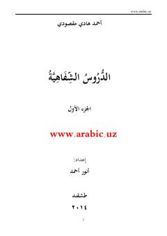

S1Boshlang'ich arab tili o'rganuvchilar uchun mo'ljallangan ilk darslik qo'llanmasi.
Ushbu qo'llanma boshlang'ich tarzda arab tilini o'rganishni istovchilar uchun mo'ljallangan bo'lib, o'zbek tilida tuzilgan ilk darslarni o'z ichiga oladi. Kitobda grammatik qoidalar, so'z birikmalari va sodda jumlalar tarjimalari bilan birgalikda bosqichma-bosqich tushuntirilgan. Ahmad Hodi Maqsudiy tomonidan tayyorlangan ushbu 1-qism boshlang'ich arab tili darslarini o'z ichiga oladi.